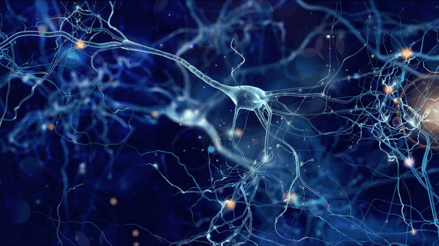
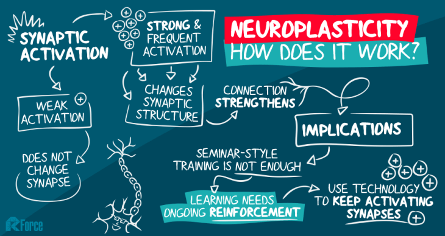
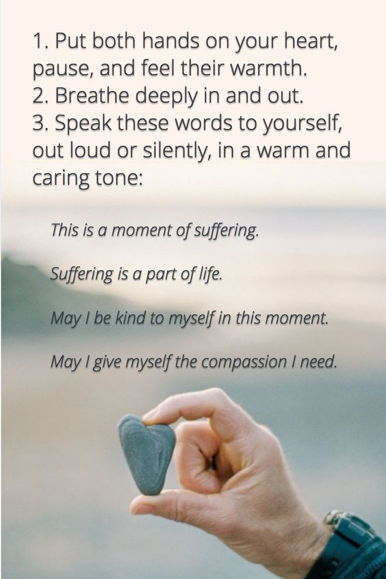

Neuroplasticity and Growth Mindset.
Researching on the following topic makes perfect sense after having learned and discussed about Emotional Intelligence. Personally, I think that in order to practice and develop our level of EQ, one needs to be aware of neuroplasticity and especially the growth mindset. The power of the growth mindset can never be highlighted enough in the current world we live in; which unfortunately sets expectations too high, its unrealistic most of the time.In brief, in the words of the wise Kirupa Chinnathambi;
"Onwards!"
Research on Neuroplasticity
1. Discuss how understanding the principals of neuroplasticity benefits people?
Being aware of neuroplasticity and its principals, brings hope. It benefits people in removing their blinders in terms of learning. It is an eye opener that in other words, our biology, the way we are made, gives us all the tools to be able to develop new skills and learn but also to bounce back and learn in a different way. That there is no one way only to learning and that the more we explore the different pathways to acquire knowledge instead of sticking to the same path, the more we are able to rewire our brain and multiply the creations of bridges between neurons
2. Discuss how you might engage with the principals of neuroplasticity for your own benefit
I feel that it will give me a clear rational to which I could hold on and refer myself to for when times get hard. That the hard way is the right way as I am nurturing the rewiring of my brain and in other words making full use of the abilities of my brain in terms of neuroplasticity.
3. What are some of the ways to increase your neuroplasticity?
Maybe, to use different methods to reach the outcome aimed at. And also, push myself out of my comfort zone a bit more every time.
For the above to happen, I will need to be attentive and reflect to my ways of dealing with problem solving. And genuinely be honest with myself and find ways to stay in my learning zone, even though its a hard.
And also the different strategies to solving problems and exploring theses different methods rather than limiting myself in exploring the same way to get to the solution.
It encapsulates a level of resilience and perseverance as it is definitely harder to walk new pathways than a known one.
I believe to be gradually shifting to a growth mindset, mindfulness and reflection are two strategies which could greatly help
4. Link to a resource that you found particularly useful or engaging.
(psst! click the image. . .)
Research on Growth Mindset
1. Discuss what it is and why it is relevant?
A growth mindset is one which is open to change and difficulty. One who sees difficulty as a challenge to accept. It is a thought shift where failure is embraced and seen as learning and growth, and an opportunity to try differently. It is a positive way to overlook everyday challenges in a more peaceful and welcoming manner. It is accepting our limitations and pushing through them to see the solution. It is a new lease to look at life.
2. In this exploration, did anything surprise you? Change for you?
Well, it guided me in reflected on life prior to knowing about neuroplasticity and growth mindset. And the feeling of gratefulness for having encountered and doing my best to practice it, it is a beautiful journey to be on and not an easy one, especially if you have been educated in a fixed mindset environment.
3. How will you integrate growth mindset into your learning journey?
Like this . . .
But also ... I will walk towards difficulty with a smile and an open mind and heart. I will reflect and plan on the tools I need to find solve the problem, and grow in the process. I will also be kind to myself in the process.

In doing so, I will encourage my peers in being kind to themselves on their journey and use growth mindset as a lens when supporting them or needing support myself.
4. Link to a resource that you found particularly useful or engaging.

(psst! you know what to do. . .)
This research has helped me in diving deeper in the subject and reflect a lot about what I need to work on and practice in order to develop a growth mindset and encourage the neuroplasticity of my brain. It is really amazing to discover a bit more about the beauty of human nature and our ability to adapt and change.